| 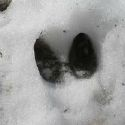 | 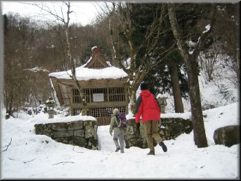 | 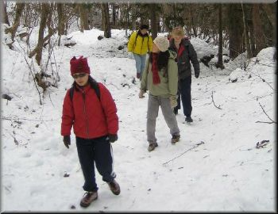 | 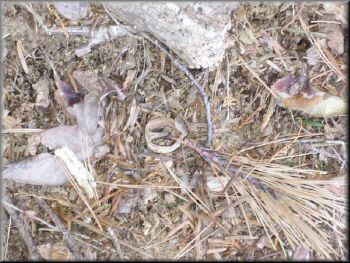 |
| 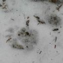 | |||
| 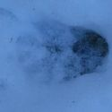 | 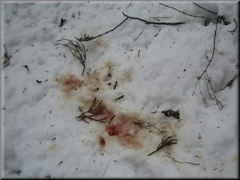 | 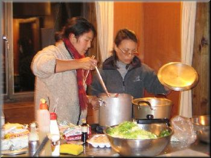 |
|
| 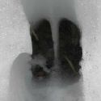 | |||
| 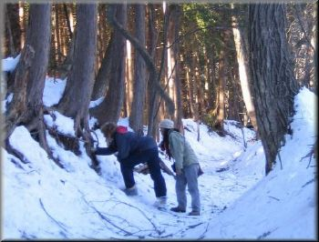 | 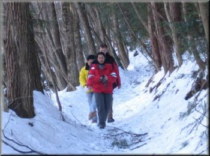 | 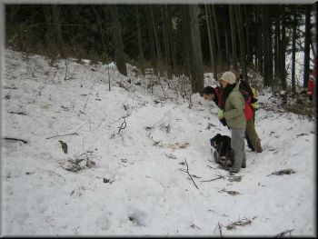 | |
| Report by Ryoko as told to Ajay | |
|
This was a different kind of event from the normal TWMC map-time
hikes and was an attempt to approach nature with the combination
of animal tracking and hiking. It also meant to improve the
sense and response of hikers in mountains. We thank all the
participants for the kind cooperation during the event.
I (Ajay) couldn't participate in this event because Tsukuba Medical Center Dr. Nishi (I forget his name..) didn't allow me to climb mountains. So I am sorry that the participants of the hike couldn't track one of the biggest animals in TWMC :).
I am writing this report from the information I got from
Ryoko. She feels that all the participants of this hike much
improved in tracking animals. So next time near your place if u
find any animal footprints and would like to find which animal
it is, don't forget that animal tracking experts are around u
:).
22nd Saturday
The day started earlier than usual. The weather forecast for the
day was sunny and in the morning temperature was less than 5
degrees. As decided, reached the 7-11 at 5: 10 am. For this hike
there were a total of 7 participants, 6 from Tsukuba and one
from Tokyo. We planned to catch the 5:54 train from
Hitachinoushikku, so we rushed to the station. Every thing went
fine as planned. We could meet the participant from Tokyo in the
train; reached the Okutama station around 9:15. A pick-up van
was already there. It took us up to the visitor center, where
the animal-tracking program was arranged. Animal tracking
sensei Sachi was quite expert in this field and explained
everything. She first started describing about the location and
kind of animals around the area. It is not easy to meet the
animals, but if we try to see field signs such as footprints,
droppings as well as leftover, they could be visible. We
started to walk towards the lake, suddenly we found animal
footprints in the direction of lake from the mountain. When we
closely observe it, we understood that it was a deer's footprint
and near the lake the leaves in the trees were all eaten up to
the height of the animal. In this program we learnt the basic
aspects of animal tracking. After this program we had lunch at
the visitor center and after the lunch again started walking to
the ridge trails near yama-no- furusatomura . This valley was
behind the mountain so it became dark around 3 pm itself, so we
decided to go back to the visitor center. At the visitor center
luckily we found an activity called mayudama tsukuri!, a
traditional Japanese program of making colored rice balls and
decorating the tree. After decorating the tree, we checked into
the bungalow. The person from the visitor center told us that it
is possible to see flying squirrel from a place near the bridge.
Some of us waited there, and found some black thing flying in a
flash of a second; looked like flying squirrel. The Bungalow was
gorgeous, a big hall and kitchen; we prepared the dinner, Korean
hot chilly noodle and Japanese Udon, and also planned for the
next day.
23rd January 2003
The plan was to wake up at 7 am and start cooking the breakfast.
But other members prefered sleeping in the cold morning so the
arranging of breakfast also became organizer's duty. We had
breakfast and, as planned, headed towards Mito-san. There was
heavy snow on the way and was very difficult to imagine how deep
it is. The landscape covered with snow was very beautiful. On
the trails many times we were trapped in the snow not knowing
which way to go. We could see the footprints of animals in many
locations and we tried to imagine what kind of animal it could
be and also could see wild squirrels in
front of us. Suddenly some of us noticed blood in the snow; our
detective mind started working. We found some footprints of
animals near the place and some hair. So everyone seemed to come
up with a conclusion that a rabbit might have been attacked, or
maybe a bird (but not sure). we followed the footprints and
again we saw blood. From the faces of some of the members, I got
a feeling that it was very cold and to go back. After the
adventurous hike in the snow and animal tracking we planned to
enjoy onsen. Actually we decided to enjoy onsen for one hour to
be able to catch the rapid train to Tokyo. But some of the
members were more interested in the onsen and because of that we
split the groups into two and the first group reached Tsukuba
around 8 pm.
|
|